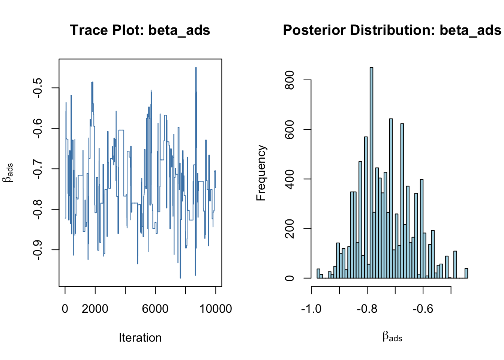

# set seed for reproducibility
set.seed(123)
# define attributes
brand <- c("N", "P", "H") # Netflix, Prime, Hulu
ad <- c("Yes", "No")
price <- seq(8, 32, by=4)
# generate all possible profiles
profiles <- expand.grid(
brand = brand,
ad = ad,
price = price
)
m <- nrow(profiles)
# assign part-worth utilities (true parameters)
b_util <- c(N = 1.0, P = 0.5, H = 0)
a_util <- c(Yes = -0.8, No = 0.0)
p_util <- function(p) -0.1 * p
# number of respondents, choice tasks, and alternatives per task
n_peeps <- 100
n_tasks <- 10
n_alts <- 3
# function to simulate one respondent’s data
sim_one <- function(id) {
datlist <- list()
# loop over choice tasks
for (t in 1:n_tasks) {
# randomly sample 3 alts (better practice would be to use a design)
dat <- cbind(resp=id, task=t, profiles[sample(m, size=n_alts), ])
# compute deterministic portion of utility
dat$v <- b_util[dat$brand] + a_util[dat$ad] + p_util(dat$price) |> round(10)
# add Gumbel noise (Type I extreme value)
dat$e <- -log(-log(runif(n_alts)))
dat$u <- dat$v + dat$e
# identify chosen alternative
dat$choice <- as.integer(dat$u == max(dat$u))
# store task
datlist[[t]] <- dat
}
# combine all tasks for one respondent
do.call(rbind, datlist)
}
# simulate data for all respondents
conjoint_data <- do.call(rbind, lapply(1:n_peeps, sim_one))
# remove values unobservable to the researcher
conjoint_data <- conjoint_data[ , c("resp", "task", "brand", "ad", "price", "choice")]
# clean up
rm(list=setdiff(ls(), "conjoint_data"))Multinomial Logit Model
This assignment expores two methods for estimating the MNL model: (1) via Maximum Likelihood, and (2) via a Bayesian approach using a Metropolis-Hastings MCMC algorithm.
1. Likelihood for the Multi-nomial Logit (MNL) Model
Suppose we have \(i=1,\ldots,n\) consumers who each select exactly one product \(j\) from a set of \(J\) products. The outcome variable is the identity of the product chosen \(y_i \in \{1, \ldots, J\}\) or equivalently a vector of \(J-1\) zeros and \(1\) one, where the \(1\) indicates the selected product. For example, if the third product was chosen out of 3 products, then either \(y=3\) or \(y=(0,0,1)\) depending on how we want to represent it. Suppose also that we have a vector of data on each product \(x_j\) (eg, brand, price, etc.).
We model the consumer’s decision as the selection of the product that provides the most utility, and we’ll specify the utility function as a linear function of the product characteristics:
\[ U_{ij} = x_j'\beta + \epsilon_{ij} \]
where \(\epsilon_{ij}\) is an i.i.d. extreme value error term.
The choice of the i.i.d. extreme value error term leads to a closed-form expression for the probability that consumer \(i\) chooses product \(j\):
\[ \mathbb{P}_i(j) = \frac{e^{x_j'\beta}}{\sum_{k=1}^Je^{x_k'\beta}} \]
For example, if there are 3 products, the probability that consumer \(i\) chooses product 3 is:
\[ \mathbb{P}_i(3) = \frac{e^{x_3'\beta}}{e^{x_1'\beta} + e^{x_2'\beta} + e^{x_3'\beta}} \]
A clever way to write the individual likelihood function for consumer \(i\) is the product of the \(J\) probabilities, each raised to the power of an indicator variable (\(\delta_{ij}\)) that indicates the chosen product:
\[ L_i(\beta) = \prod_{j=1}^J \mathbb{P}_i(j)^{\delta_{ij}} = \mathbb{P}_i(1)^{\delta_{i1}} \times \ldots \times \mathbb{P}_i(J)^{\delta_{iJ}}\]
Notice that if the consumer selected product \(j=3\), then \(\delta_{i3}=1\) while \(\delta_{i1}=\delta_{i2}=0\) and the likelihood is:
\[ L_i(\beta) = \mathbb{P}_i(1)^0 \times \mathbb{P}_i(2)^0 \times \mathbb{P}_i(3)^1 = \mathbb{P}_i(3) = \frac{e^{x_3'\beta}}{\sum_{k=1}^3e^{x_k'\beta}} \]
The joint likelihood (across all consumers) is the product of the \(n\) individual likelihoods:
\[ L_n(\beta) = \prod_{i=1}^n L_i(\beta) = \prod_{i=1}^n \prod_{j=1}^J \mathbb{P}_i(j)^{\delta_{ij}} \]
And the joint log-likelihood function is:
\[ \ell_n(\beta) = \sum_{i=1}^n \sum_{j=1}^J \delta_{ij} \log(\mathbb{P}_i(j)) \]
2. Simulate Conjoint Data
We will simulate data from a conjoint experiment about video content streaming services. We elect to simulate 100 respondents, each completing 10 choice tasks, where they choose from three alternatives per task. For simplicity, there is not a “no choice” option; each simulated respondent must select one of the 3 alternatives.
Each alternative is a hypothetical streaming offer consistent of three attributes: (1) brand is either Netflix, Amazon Prime, or Hulu; (2) ads can either be part of the experience, or it can be ad-free, and (3) price per month ranges from $4 to $32 in increments of $4.
The part-worths (ie, preference weights or beta parameters) for the attribute levels will be 1.0 for Netflix, 0.5 for Amazon Prime (with 0 for Hulu as the reference brand); -0.8 for included adverstisements (0 for ad-free); and -0.1*price so that utility to consumer \(i\) for hypothethical streaming service \(j\) is
\[ u_{ij} = (1 \times Netflix_j) + (0.5 \times Prime_j) + (-0.8*Ads_j) - 0.1\times Price_j + \varepsilon_{ij} \]
where the variables are binary indicators and \(\varepsilon\) is Type 1 Extreme Value (ie, Gumble) distributed.
The following code provides the simulation of the conjoint data.
Note
3. Preparing the Data for Estimation
The “hard part” of the MNL likelihood function is organizing the data, as we need to keep track of 3 dimensions (consumer \(i\), covariate \(k\), and product \(j\)) instead of the typical 2 dimensions for cross-sectional regression models (consumer \(i\) and covariate \(k\)). The fact that each task for each respondent has the same number of alternatives (3) helps.
In addition, we need to convert the categorical variables for brand and ads into binary variables. This ensures that each attribute can be used as a numeric predictor in the utility function.
Converting Categorical Variables into Dummy Variables
The variables brand and ad are currently categorical:
brandincludes"N"(Netflix),"P"(Prime), and"H"(Hulu). We’ll treat Hulu as the reference category and create:brand_N = 1if brand is Netflix, 0 otherwise
brand_P = 1if brand is Prime, 0 otherwise
adindicates whether advertisements are included. We’ll define:ad_yes = 1if ads are present ("Yes"), 0 otherwise
We implement this transformation as follows:
library(readr)
conjoint_data <- read_csv("conjoint_data.csv")Rows: 3000 Columns: 6
── Column specification ────────────────────────────────────────────────────────
Delimiter: ","
chr (2): brand, ad
dbl (4): resp, task, choice, price
ℹ Use `spec()` to retrieve the full column specification for this data.
ℹ Specify the column types or set `show_col_types = FALSE` to quiet this message.head(conjoint_data)# A tibble: 6 × 6
resp task choice brand ad price
<dbl> <dbl> <dbl> <chr> <chr> <dbl>
1 1 1 1 N Yes 28
2 1 1 0 H Yes 16
3 1 1 0 P Yes 16
4 1 2 0 N Yes 32
5 1 2 1 P Yes 16
6 1 2 0 N Yes 24library(dplyr)
Attaching package: 'dplyr'The following objects are masked from 'package:stats':
filter, lagThe following objects are masked from 'package:base':
intersect, setdiff, setequal, union# Create dummy variables
conjoint_data <- conjoint_data %>%
mutate(
brand_N = as.numeric(brand == "N"),
brand_P = as.numeric(brand == "P"),
ad_yes = as.numeric(ad == "Yes")
)
head(conjoint_data)# A tibble: 6 × 9
resp task choice brand ad price brand_N brand_P ad_yes
<dbl> <dbl> <dbl> <chr> <chr> <dbl> <dbl> <dbl> <dbl>
1 1 1 1 N Yes 28 1 0 1
2 1 1 0 H Yes 16 0 0 1
3 1 1 0 P Yes 16 0 1 1
4 1 2 0 N Yes 32 1 0 1
5 1 2 1 P Yes 16 0 1 1
6 1 2 0 N Yes 24 1 0 1Each row now includes respondent ID, task ID, product attributes (brand, ad, price), the choice indicator, and the dummy-coded variables needed for estimation.
This transformation prepares the dataset for computing utility values and estimating the MNL model via maximum likelihood in the next section.
4. Estimation via Maximum Likelihood
We now estimate the multinomial logit (MNL) model using Maximum Likelihood Estimation (MLE). Specifically, we estimate the following parameters:
- \(\beta_{\text{netflix}}\) for the dummy variable
brand_N - \(\beta_{\text{prime}}\) for the dummy variable
brand_P - \(\beta_{\text{ads}}\) for the dummy variable
ad_yes - \(\beta_{\text{price}}\) for the continuous variable
price
We first code the log-likelihood function below:
# Prepare matrix of covariates (X) and outcome (y)
X <- as.matrix(conjoint_data[, c("brand_N", "brand_P", "ad_yes", "price")])
y <- conjoint_data$choice
id_task <- paste(conjoint_data$resp, conjoint_data$task, sep = "_")
task_groups <- split(data.frame(X, y), id_task)
# Log-likelihood function for MNL
log_likelihood <- function(beta) {
ll <- 0
for (task in task_groups) {
X_mat <- as.matrix(task[, 1:4])
y_vec <- task$y
utilities <- X_mat %*% beta
exp_utilities <- exp(utilities)
probs <- exp_utilities / sum(exp_utilities)
ll <- ll + sum(y_vec * log(probs))
}
return(-ll) # negative log-likelihood for minimization
}And then we use the optim() function in R to find the MLEs:
# Initial values
beta_init <- rep(0, 4)
# Run MLE via optim()
mle_result <- optim(
par = beta_init,
fn = log_likelihood,
method = "BFGS",
hessian = TRUE
)
mle_result$par
[1] 0.94120473 0.50161701 -0.73200143 -0.09948157
$value
[1] 879.8554
$counts
function gradient
47 9
$convergence
[1] 0
$message
NULL
$hessian
[,1] [,2] [,3] [,4]
[1,] 121.648544 -67.047946 4.422096 274.10419
[2,] -67.047946 118.481280 2.494921 -70.18297
[3,] 4.422096 2.494921 132.906993 -249.98791
[4,] 274.104189 -70.182968 -249.987915 26155.74126Finally, we compute standard errors and 95% confidence intervals based on the estimated Hessian:
# Extract estimates and standard errors
beta_hat <- mle_result$par
vcov_mat <- solve(mle_result$hessian)
se_hat <- sqrt(diag(vcov_mat))
# 95% confidence intervals
ci_lower <- beta_hat - 1.96 * se_hat
ci_upper <- beta_hat + 1.96 * se_hat
estimates <- data.frame(
Parameter = c("beta_netflix", "beta_prime", "beta_ads", "beta_price"),
Estimate = beta_hat,
Std_Error = se_hat,
CI_Lower = ci_lower,
CI_Upper = ci_upper
)
print(estimates) Parameter Estimate Std_Error CI_Lower CI_Upper
1 beta_netflix 0.94120473 0.111039639 0.7235670 1.15884242
2 beta_prime 0.50161701 0.111100000 0.2838610 0.71937301
3 beta_ads -0.73200143 0.087809687 -0.9041084 -0.55989445
4 beta_price -0.09948157 0.006333649 -0.1118955 -0.08706762The table above presents the maximum likelihood estimates (MLEs) for the effects of brand, advertising, and price on consumer choice, along with their standard errors and 95% confidence intervals.
\(\beta_{\text{netflix}} \approx 0.94\)
Choosing Netflix adds approximately 0.94 units to utility (relative to Hulu), holding other attributes constant. The 95% CI does not include zero, so this effect is statistically significant and positive.\(\beta_{\text{prime}} \approx 0.50\)
Choosing Prime adds about 0.50 units to utility (relative to Hulu). The positive and significant estimate suggests Prime is also preferred over Hulu, but less so than Netflix.\(\beta_{\text{ads}} \approx -0.73\)
The presence of ads decreases utility by around 0.73 units. The effect is negative, statistically significant, and aligns with expectations that users dislike ads.\(\beta_{\text{price}} \approx -0.10\)
Each $1 increase in price reduces utility by about 0.10. This estimate is statistically significant and confirms that price sensitivity exists—higher prices reduce the likelihood of selection.
Overall, these results are consistent with economic intuition: consumers prefer Netflix and Prime over Hulu, dislike ads, and are less likely to choose expensive options.
5. Estimation via Bayesian Methods
In this section, we estimate the parameters of the MNL model using a Metropolis-Hastings MCMC algorithm. We aim to draw samples from the posterior distribution of the model parameters given the observed data.
Prior Assumptions
We assume normal priors on the four parameters: - \(\beta_{\text{netflix}}, \beta_{\text{prime}}, \beta_{\text{ads}} \sim \mathcal{N}(0, 5^2)\) - \(\beta_{\text{price}} \sim \mathcal{N}(0, 1^2)\)
Proposal Distribution
We use a random walk Metropolis-Hastings sampler with a proposal distribution that adds Gaussian noise to the current parameter vector: - First three betas use \(\mathcal{N}(0, 0.05^2)\) noise - Price beta uses \(\mathcal{N}(0, 0.005^2)\) noise
Each dimension is sampled independently.
Log-Posterior Function
The log-posterior combines the log-likelihood from earlier with the log-prior:
# Prior log-density function
log_prior <- function(beta) {
dnorm(beta[1], 0, sqrt(5), log = TRUE) + # brand_Netflix
dnorm(beta[2], 0, sqrt(5), log = TRUE) + # brand_Prime
dnorm(beta[3], 0, sqrt(5), log = TRUE) + # ad_included
dnorm(beta[4], 0, 1, log = TRUE) # price
}
# Log posterior function (likelihood + prior)
log_posterior <- function(beta) {
-log_likelihood(beta) + log_prior(beta)
}5.1 MCMC Sampler
We now implement the Metropolis-Hastings algorithm to draw 11,000 posterior samples, discarding the first 1,000 as burn-in.
# Metropolis-Hastings sampler
run_mcmc <- function(start, n_iter = 11000) {
draws <- matrix(NA, nrow = n_iter, ncol = length(start))
colnames(draws) <- c("brand_N", "brand_P", "ad_yes", "price")
beta_current <- start
log_post_current <- log_posterior(beta_current)
for (i in 1:n_iter) {
proposal <- beta_current + c(
rnorm(1, 0, sqrt(0.05)),
rnorm(1, 0, sqrt(0.05)),
rnorm(1, 0, sqrt(0.05)),
rnorm(1, 0, sqrt(0.005))
)
log_post_proposal <- log_posterior(proposal)
log_accept_ratio <- log_post_proposal - log_post_current
if (log(runif(1)) < log_accept_ratio) {
beta_current <- proposal
log_post_current <- log_post_proposal
}
draws[i, ] <- beta_current
}
return(draws)
}
# Run MCMC
set.seed(42)
posterior_draws <- run_mcmc(start = rep(0, 4))
# Drop first 1000 as burn-in
posterior_draws <- posterior_draws[1001:11000, ]
# Summarize results
post_summary <- apply(posterior_draws, 2, function(x) {
c(mean = mean(x), sd = sd(x),
lower = quantile(x, 0.025),
upper = quantile(x, 0.975))
})
round(t(post_summary), 3) mean sd lower.2.5% upper.97.5%
brand_N 0.948 0.117 0.687 1.188
brand_P 0.495 0.112 0.248 0.674
ad_yes -0.732 0.096 -0.901 -0.536
price -0.101 0.006 -0.113 -0.088The table above summarizes the posterior means, standard deviations, and 95% credible intervals for each model parameter based on 10,000 MCMC draws.
\(\beta_{\text{netflix}} \approx 0.948\)
The posterior mean suggests that Netflix increases utility by about 0.95 units relative to Hulu, holding other attributes constant. The 95% credible interval (\([0.687,\ 1.188]\)) does not include 0, indicating strong posterior evidence that consumers prefer Netflix.\(\beta_{\text{prime}} \approx 0.495\)
Prime increases utility by roughly 0.50 units relative to Hulu. The interval (\([0.248,\ 0.674]\)) also excludes 0, suggesting a statistically and substantively positive effect.\(\beta_{\text{ads}} \approx -0.732\)
The presence of ads reduces utility significantly. The posterior mean is negative and the credible interval (\([-0.901,\ -0.536]\)) confirms that consumers dislike advertising.\(\beta_{\text{price}} \approx -0.101\)
Each \(1 increase in price lowers utility by about 0.10. The interval (\)[-0.113, -0.088]$) is very tight, reflecting precise posterior belief that consumers are price-sensitive.
Summary
The Bayesian estimates align closely with the MLE results, reinforcing the same behavioral insights: Netflix and Prime are preferred over Hulu, advertisements reduce utility, and price negatively affects choice probability. The credible intervals provide a probabilistic interpretation of parameter uncertainty.
5.2 Trace Plot and Posterior Histogram
To assess convergence and mixing, we examine the trace plot and posterior histogram for \(\beta_{\text{ads}}\). This parameter reflects consumer aversion to ads and is expected to be negative.
par(mfrow = c(1, 2))
# Trace plot
plot(posterior_draws[, "ad_yes"], type = "l", col = "steelblue",
xlab = "Iteration", ylab = expression(beta[ads]),
main = "Trace Plot: beta_ads")
# Histogram
hist(posterior_draws[, "ad_yes"], breaks = 50, col = "lightblue",
main = "Posterior Distribution: beta_ads",
xlab = expression(beta[ads]))
- The trace plot shows that the sampler explores the posterior space efficiently without getting stuck, with values fluctuating around the central region. This suggests good mixing behavior and convergence.
- The posterior histogram is bell-shaped and centered around -0.73, which aligns with our interpretation from the posterior summary table. The posterior mass lies almost entirely below 0, reinforcing strong evidence that consumers dislike ads.
Together, these plots support the reliability of our posterior inference for \(\beta_{\text{ads}}\).
5.3 Posterior Summary vs. MLE Comparison
# Print Bayesian summary
bayesian_summary <- round(t(post_summary), 3)
print(bayesian_summary) mean sd lower.2.5% upper.97.5%
brand_N 0.948 0.117 0.687 1.188
brand_P 0.495 0.112 0.248 0.674
ad_yes -0.732 0.096 -0.901 -0.536
price -0.101 0.006 -0.113 -0.088# Print MLE summary
mle_summary <- round(estimates[, c("Estimate", "Std_Error", "CI_Lower", "CI_Upper")], 3)
rownames(mle_summary) <- estimates$Parameter
print(mle_summary) Estimate Std_Error CI_Lower CI_Upper
beta_netflix 0.941 0.111 0.724 1.159
beta_prime 0.502 0.111 0.284 0.719
beta_ads -0.732 0.088 -0.904 -0.560
beta_price -0.099 0.006 -0.112 -0.087- Point estimates are nearly identical across methods:
- For example, \(\beta_{\text{ads}}\) is -0.732 under both MLE and Bayesian estimation.
- The price coefficient is also extremely close: -0.099 (MLE) vs. -0.101 (Bayesian).
- Uncertainty estimates are consistent:
- Posterior standard deviations are almost the same as MLE standard errors.
- Credible intervals (Bayes) and confidence intervals (MLE) show overlapping bounds for all parameters.
- Interpretation remains the same:
- Consumers strongly prefer Netflix and Prime over Hulu.
- Ads negatively impact utility.
- Higher prices reduce the likelihood of selection.
Takeaway:
The close match between Bayesian and MLE results confirms that our findings are robust across estimation methods. Bayesian inference provides the additional benefit of interpreting results probabilistically (e.g., the probability that \(\beta_{\text{ads}} < 0\) is essentially 100%).
This comparison reinforces confidence in the behavioral conclusions of the model.
6. Discussion
6.1 Interpreting the Parameter Estimates
Now imagine we didn’t know this was simulated data—what could we infer just by looking at the parameter estimates?
First, the signs and magnitudes of the coefficients already tell a clear story:
- Netflix and Prime are preferred over Hulu: Both \(\beta_{\text{Netflix}}\) and \(\beta_{\text{Prime}}\) are positive, meaning these brands increase utility relative to the baseline (Hulu).
- Netflix wins: Since \(\beta_{\text{Netflix}} > \beta_{\text{Prime}}\), it suggests consumers tend to prefer Netflix over Prime when choosing a streaming service.
- Price matters (negatively): The negative value of \(\beta_{\text{price}}\) makes intuitive sense—higher prices reduce the likelihood of a product being chosen.
So even without knowing the “ground truth,” the estimated model parameters align closely with how we expect real consumers to behave.
6.2 Extending to a Multi-Level (Hierarchical) Model
In this project, we used a pooled model, which assumes that every respondent shares the same preferences. That’s a reasonable simplification—but we know that in the real world, people differ.
Some hate ads more than others. Some are super price-sensitive. Some might even prefer Hulu.
To reflect this heterogeneity, we’d want to move to a multi-level (hierarchical) model. Here’s the idea:
- Each individual gets their own set of preference parameters \(\beta_i\)
- These \(\beta_i\) values are drawn from a shared population distribution, like: [ _i (, ) ]
- Instead of estimating just one set of coefficients, we’d be estimating a distribution of preferences across the population
This kind of model is often referred to as a random-coefficients logit or a hierarchical Bayesian MNL. It’s more flexible, more realistic—and commonly used in real-world conjoint analysis.
To simulate from this model, we’d: - Generate individual-level \(\beta_i\) values from the population distribution - Simulate choices based on those personalized utilities
To estimate it, we’d typically use Bayesian methods like hierarchical MCMC, or tools like Stan or PyMC that can handle the complexity.
In short: our current model works well for teaching and illustration—but extending it to a hierarchical version is the next step for modeling real-world choice behavior.